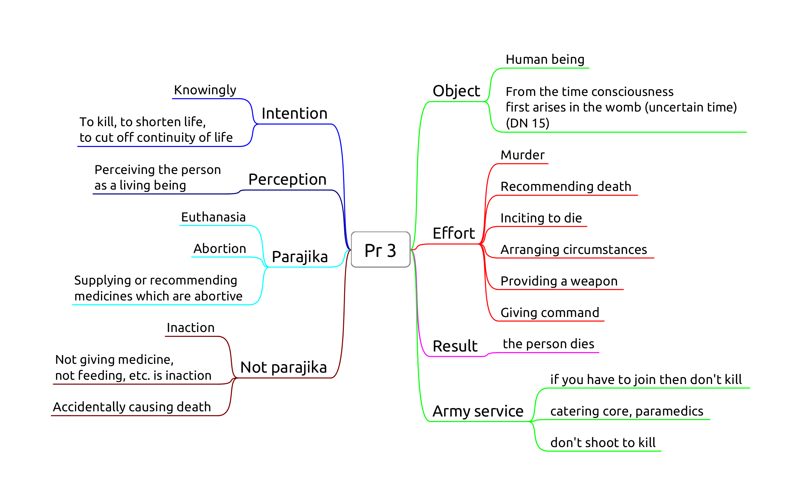

Killing and Harming
- Pr 3, Killing a human being
- Pc 61, Killing an animal
- Pc 20, Pouring water containing living beings
- Pc 62, Drinking water containing living beings
- Pc 10, Digging soil
- Pc 11, Damaging living plants or seeds
Pr 3, Killing a human being

Origin: bhikkhus develop aversion to the body and kill themselves or ask an assassin to kill them.
Recommending euthanasia can be parajika if the instruction is followed.
Pc 61, Killing an animal
Giving an order fulfils effort. Result is a factor.
Doesn't include animals smaller than visible to the naked eye. Doesn't include accidents (sweeping).
Pc 20, Pouring water containing living beings
Knowing they will die from pouring it. It can also include knowingly adding poisonous substances.
Giving an order fulfils effort.
Result is not a factor. Doesn't include accidents.
Can't water plants if one plans to eat its fruit, but may indicate it for others.
Pc 62, Drinking water containing living beings
Knowing they will die from drinking it, even accidentally.
Using water strainers or robe. Determining a corner of the sanghati as a water-filter.
Result is not a factor.
Pc 10, Digging soil
Origin: relates to the ancient belief that soil is alive, and loses life when dug up.
Object: 'genuine' soil.
Not genuine soil:
- pure or mostly rock, stones, gravel, sand
- burnt or already dug up soil
- until rained on for four months
- dust from wind erosion
Effort: Digging, burning, making a hole, or giving command to do it.
Putting tent pegs in the ground is to be confessed.
Non-offenses:
- unknowingly, unthinkingly, unintentionally
- indicating a general need or task
- digging a trapped person or animal out
Allowance to indicate a need or general task to a lay person by "wording it right."
The expression kappiya-vohāra ("allowable expression," or "wording it right") is used where an express command would be an offense, but an indication of a desire or intent would not.
Pc 11, Damaging living plants or seeds
Origin: a bhikkhu cuts down a tree where a deva was living. The rule is formed later, when people complained of the bhikkhus mistreating one-facultied life.
Object: Living plant or seed. Lower plant life (i.e. mold, algae, fungi) is not included.
Effort: cutting, breaking, cooking, or getting others to do it.
Fruit with seeds: allowance to make allowable (kappiyam). Fruit can be kappied in one "heap".
To 'kappi' fruit is about the feelings of the donor, not killing the fruit or transfering kamma.
Knowingly eating un-kappied seeds is dukkata.
Non-offenses:
- unknowingly, unthinkingly, unintentionally
- asking a lay person for flowers etc. in general, or indicating a general task
- can cut a trapped person or animal out
- counter-fire
Note: Pc 10 and Pc 11 prevents bhikkhus from engaging in agriculture, which is probably part of the intended results, although not their direct origin.